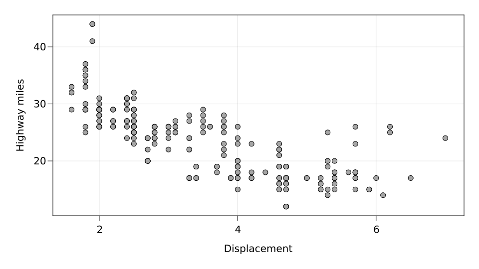
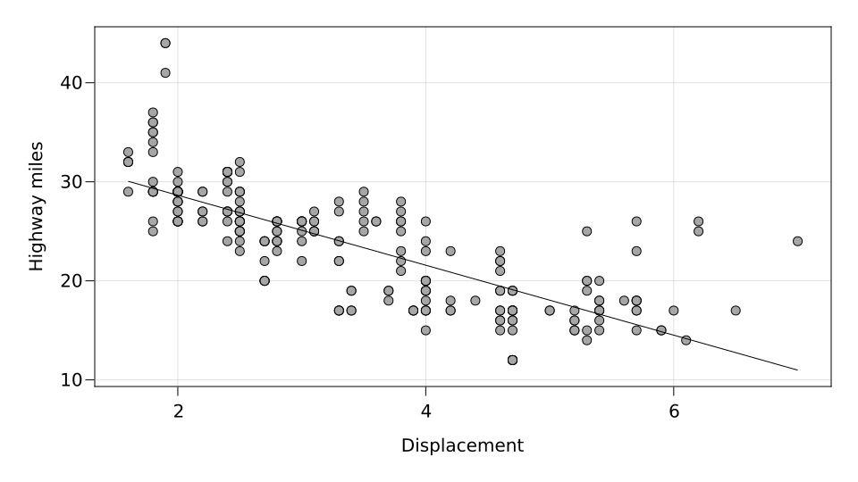
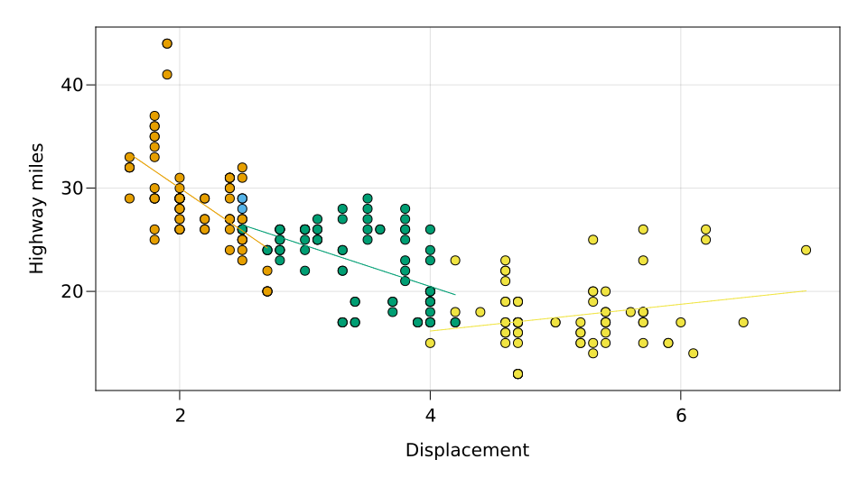
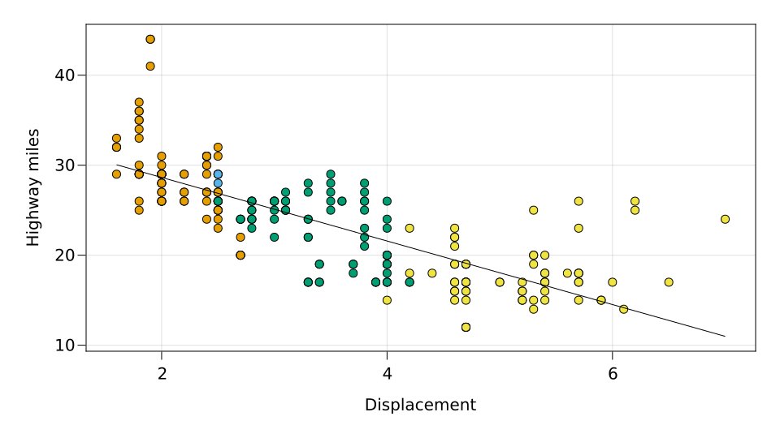

Tutorial
Here we will see what are the basic building blocks of SplitApplyPlot, and how to combine them to create complex plots based on tables or other formats.
Basic building blocks
The most important functions are mapping, and visual. mapping determines the mappings from data to plot. Its positional arguments correspond to the x, y or z axes of the plot, whereas the keyword arguments correspond to plot attributes that can vary continuously or discretely, such as color or markersize. Variables in mapping are split according to the categorical attributes in it, and then converted to plot attributes using a default palette. visual can be used to give data-independent visual information about the plot (plotting function or attributes).
Finally, data determines what is the dataset to be used.
Operations
The outputs of mapping, visual, and data can be combined with + or *, to generate the specification of a complex plot.
The operation + is used to create separate layers. a + b has as many layers as la + lb, where la and lb are the number of layers in a and b respectively.
The operation a * b create la * lb layers, where la and lb are the number of layers in a and b respectively. Each layer of a * b contains the combined information of the corresponding layer in a and the corresponding layer in b. In simple cases, however, both a and b will only have one layer, and a * b simply combines the information.
Working with tables
using RDatasets: dataset
using SplitApplyPlot, CairoMakie
mpg = dataset("ggplot2", "mpg");
cols = mapping(:Displ => "Displacement", :Hwy => "Highway miles");
grp = mapping(color = :Cyl => nonnumeric => "Cylinders");
scat = visual(Scatter)
pipeline = cols * scat
plot(data(mpg) * pipeline)
Now let's simply add grp to the pipeline to color according to :Cyl.
plot(data(mpg) * grp * pipeline) Traces can be added together with +.
pipenew = cols * (scat + linear())
plot(data(mpg) * pipenew) We can put grouping in the pipeline (we get a warning because of a degenerate group).
plot(data(mpg) * grp * pipenew) This is a more complex example, where we split the scatter plot, but do the linear regression with all the data.
different_grouping = grp * scat + linear()
plot(data(mpg) * cols * different_grouping)
This page was generated using Literate.jl.